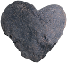
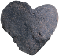
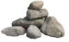
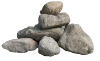

sansuisounds
枯山水
ABOUT
Welcome to SansuiSounds, where you can create, and listen to, your very own digital zen garden.
Based on the ancient Japanese gardening style of Karesansui, place stones and bonzai trees around your sandbox to create your own unique design.
Not sure how? See START for more instructions.
Want to set the mood? Press the play button next to Ambiance down below the sandbox.
Like what you see? Check out more of my work at the links below.
A project by Becca Burten.
START
Click an item to place it in your garden, selecting as many of each as you like.
In the sandbox, you can move items by dragging and dropping them into place. Shift+Click if you want to remove one instead.
Once satisfied with your design, it's time to rake!
Press the play button next to Rake to watch fine lines draw in the 'sand' around your designs.
Make sure you have your volume on...these five-toothed rakes are creating musical staves, and your stones have become the notes! As the rake encounters items on its path, you'll hear the soothing chimes of your own design.
Play it again, or clear the sand and start your new sansuisound-- no two are the same!
 



 
